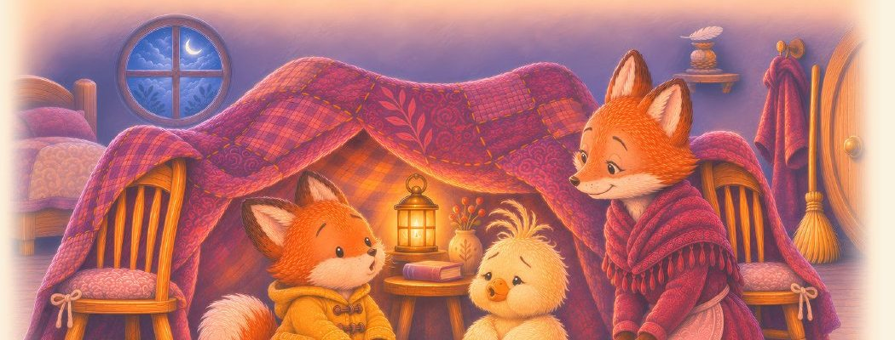
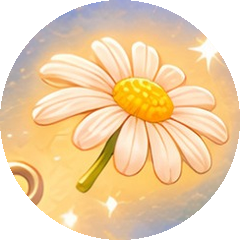
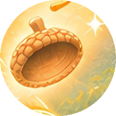

Bobbin’s Calm-Down Cards
Eight little ideas from Bobbin’s stories for when a feeling gets big. Cut them out, keep them in a pocket or a jar, and pick one together.

✂ Cut along the dotted lines.

Say hello to it
“Hello, cross feeling.” Every feeling is allowed.
Give the feeling a name.

How big is it?
Show it with your hands: acorn-small, apple-middle or pumpkin-BIG?
Bun-and-Soup Breath
Smell the warm bun: breathe in, 1-2-3. Blow on the hot soup: whoooo, 1-2-3-4.
Do it three times.
Squeeze and let go
Squeeze your paws tight… then let them go soft.
Feel the difference.
Free printable from tarkasatales.com · From the stories in Bobbin and the Wobble Bridge and Bobbin’s Feelings Pocket© 2026 Saurabh Vig